Duke Pratt School of Engineering, Class of 2028
Emerson
Cortazar
I study electrical and computer engineering. I've drawn the as-built electrical set for a solar water system in Eswatini, wired enclosures for a 1.2 MW microgrid, and designed a robot cell for picking axle parts. I also write software, including tools that measure how machine learning models behave.

- Studies
- Electrical & Computer Engineering, Public Policy
- Contact
- efc19@duke.edu
- Full set
- Portfolio PDF
Sheet 01 of 06
Solar water system, Eswatini
I designed the full electrical system for a solar-powered water pump and filtration installation at Herefords Primary School. That covered the one-line diagram, the termination drawings, and the conduit and wire schedule. The drawings were issued as-built in August 2025.
- Array
- 1.65 kW, 3 modules
- Project
- WSZ-WP003
- Drawn by
- EFC
- Status
- Rev C as-built, 13 Aug 2025

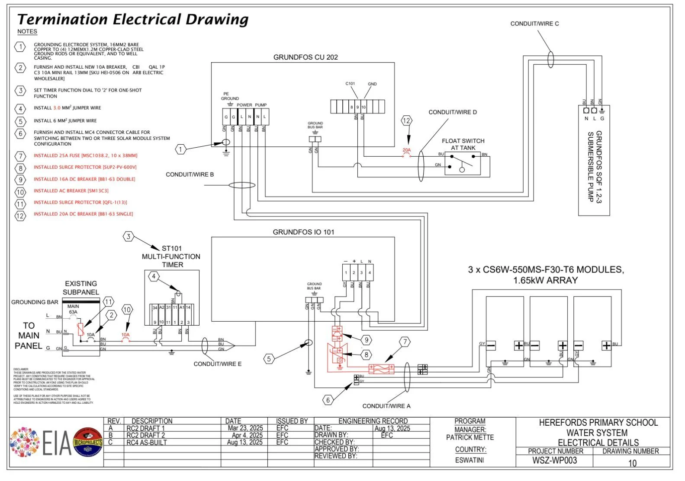
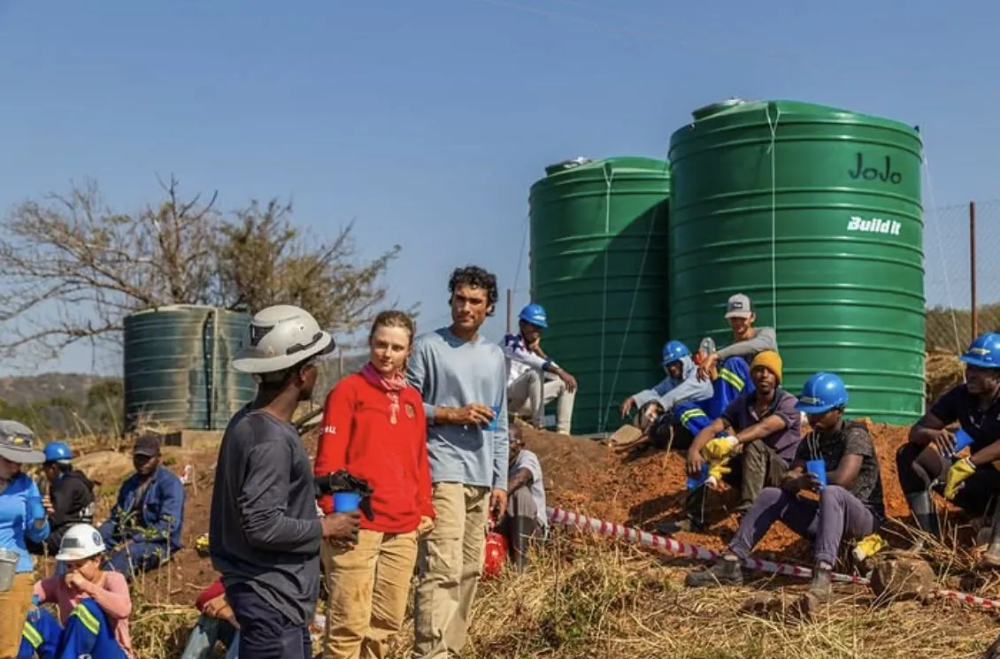
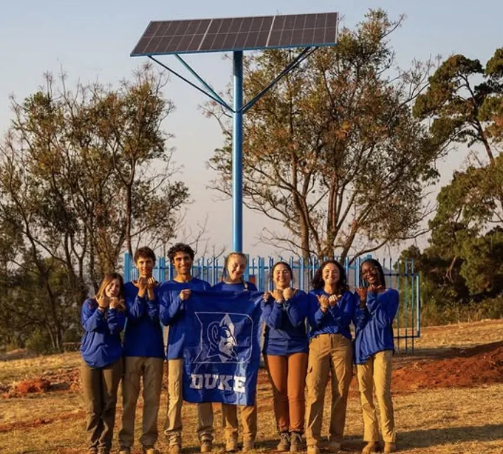
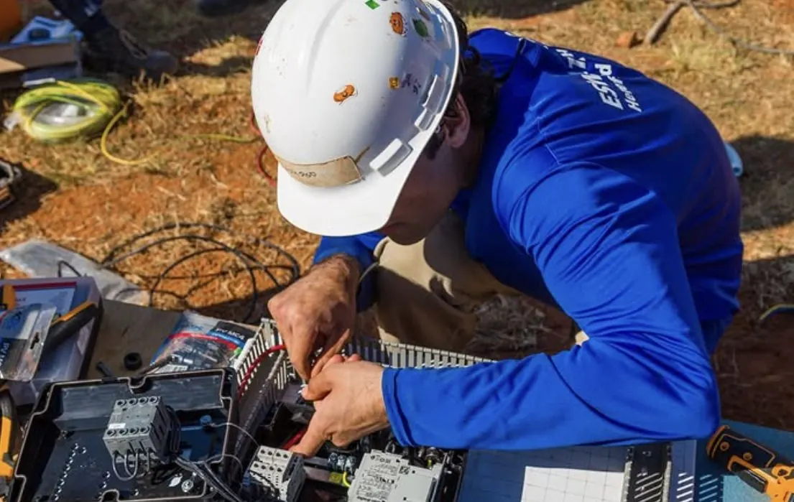
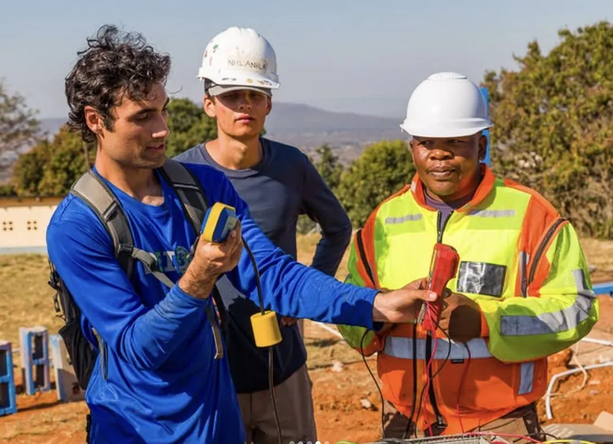
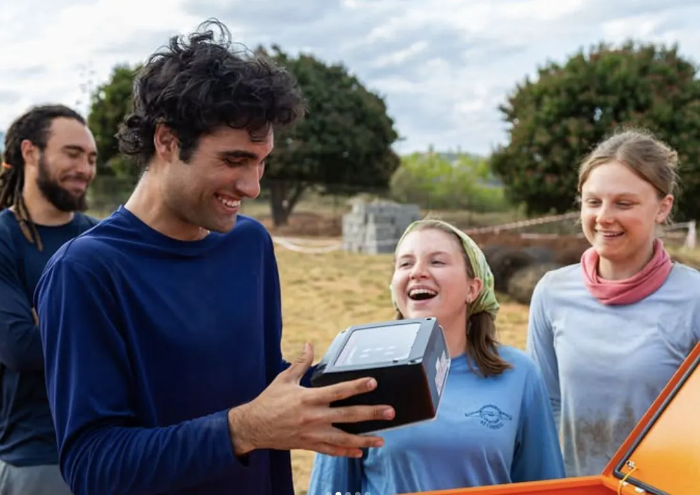
Sheet 02 of 06
1.2 megawatt microgrid
I was on the assembly team for a 1.2 MW microgrid for manufacturers and small-scale data centers, building and wiring power distribution and control enclosures to schematic.
- Capacity
- 1.2 MW
- Role
- Assembly team
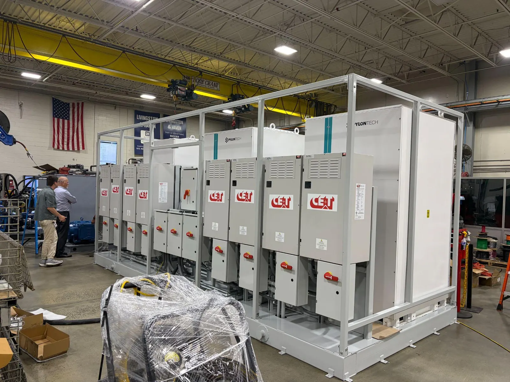
Sheet 03 of 06
FANUC robot cell
I designed an automated bin-picking cell for Toyota axle parts. I configured the 3D vision system to detect parts in bins, programmed the robot's motion onto production conveyors, and simulated the full cell in RoboGuide, including its safety perimeter and interference zones.
- Robot
- FANUC CRX-30iA
- Simulation
- RoboGuide
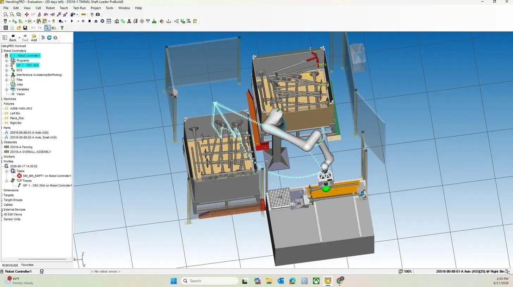
Sheet 04 of 06
Hydraulic control panels
I built industrial control panels for the hydraulic power units that operate heavy manufacturing equipment, wiring them to electrical schematics, including wire sizing and terminal layout.
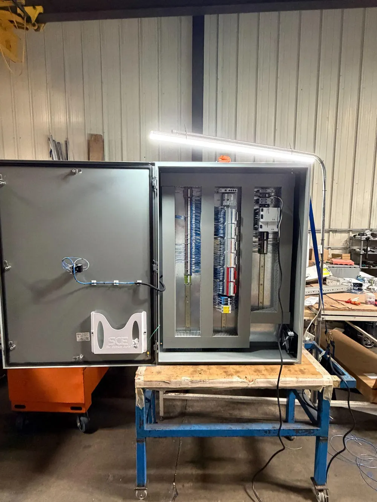
Sheet 05 of 06
DC microgrid manual
I wrote the user manual for AEG's DC microgrid product, detailing component specifications, system operation and installation requirements.
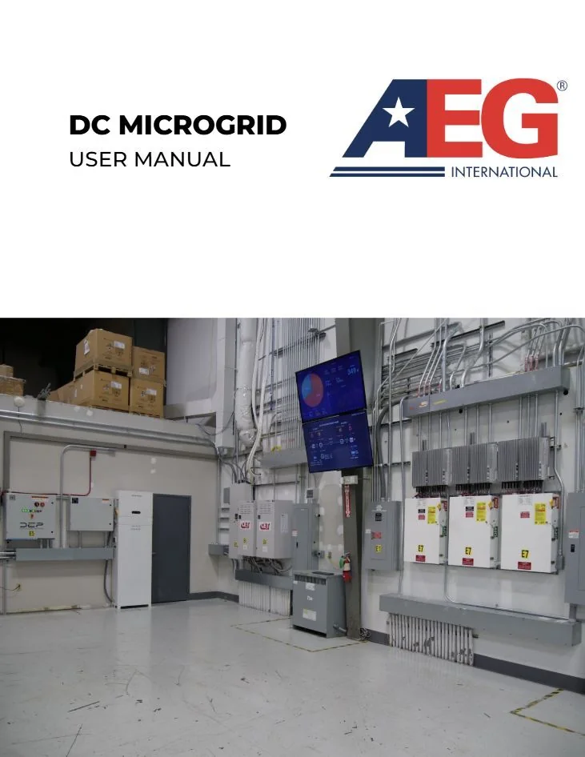
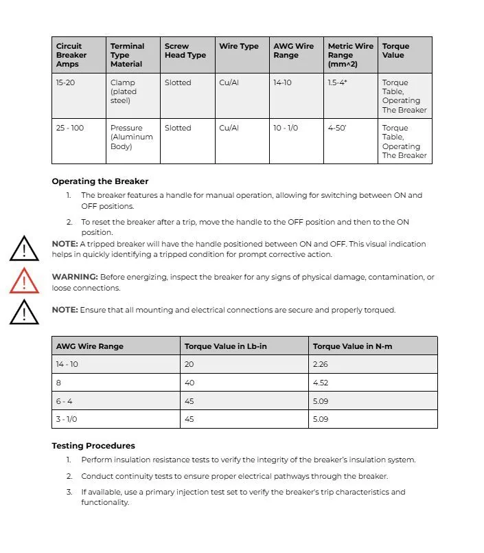
Sheet 06 of 06
Software
-
GreenAttentionBench
A benchmarking suite for long-context LLM inference on consumer hardware. It sweeps prompt size and context length, then records time to first token, throughput and peak memory. Peak memory scaled linearly with context length.
Python, llama.cpp
-
Air traffic conflict ML
A simulation-driven pipeline comparing kinematic baselines with LSTM and Transformer models for short-horizon conflict risk estimation under noisy airspace conditions.
Python
-
Emerson's Dictionary
A browser tool that pulls rare words out of your reading, shows them in context, and builds a personal dictionary. Everything runs client-side.
TypeScript, JavaScript
Contact